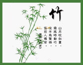
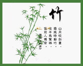

感人故事
感动中国--朱彦夫
1933年朱彦夫出生在人杰地灵的沂蒙山腹地——沂源县张家泉村。他从小家贫如洗，14岁时就毅然参了军，1949年光荣加入了中国共产党。少年从军保家卫国，血洒疆场、
身体残疾；退伍后，拖着残躯带领乡亲建设家园，并将自己的经历体会写成小说，用坚强意志和为民情怀书写着自己的“极限人生”，被誉为“中国的保尔·柯察金”。
1950年，朱彦夫在抗美援朝的一次战役中身负重伤，双腿膝盖以下、双手手腕以上截肢，失去左眼，成了一级伤残军人。
1957年，担任村支部书记。上任伊始，朱彦夫拄着拐，拖着17斤重的假肢，到田间地头查看生产，逐门逐户察访民情。他的主意慢慢拿定：治山、治水、造田、架电。一个个山里人想
都没想过的大工程，在张家泉热火朝天地展开，一干就是10多年。
1982年至今，从村党支部书记岗位退下来后，他用嘴衔笔、残肢抱笔，历时7年，七易其稿，创作完成了两部震撼人心的自传体长篇小说《极限人生》和《男儿无悔》。
时任中央政治局委员、中央军委副主席、国防部长迟浩田亲笔题写书名并题词：“铁骨扬正气，热血书春秋”。

 



生命的价值
在一次讨论会上，一位著名的演说家没讲一句开场白，手里却高举着一张20美元的钞票。
面对会议室里的200个人，他问：“谁要这20美元？”一只只手举了起来。他接着说：“我打算把这20美元送给你们中的一位，但在这之前，请准许我做一件事。
”他说着将钞票揉成一团，然后问：“谁还要？”仍有人举起手来。他又说：“那么，假如我这样做又会怎么样呢？”他把钞票扔到地上，又踏上一只脚，并且用脚碾它。
尔后他拾起钞票，钞票已变得又脏又皱。“现在谁还要？”还是有人举起手来。
“朋友们，你们已经上了一堂很有意义的课。无论我如何对待那张钞票，你们还是想要它，因
为它并没贬值，它依旧值20美元。人生路上，我们会无数次被自己的决定或碰到的逆境击倒、欺凌甚至碾得粉身碎骨。我们觉得自己似乎一文不值。但无论发生什么，或将
要发生什么，在上帝的眼中，你们永远不会丧失价值。在他看来，肮脏或洁净，衣着齐整或不齐整，你们依然是无价之宝。”